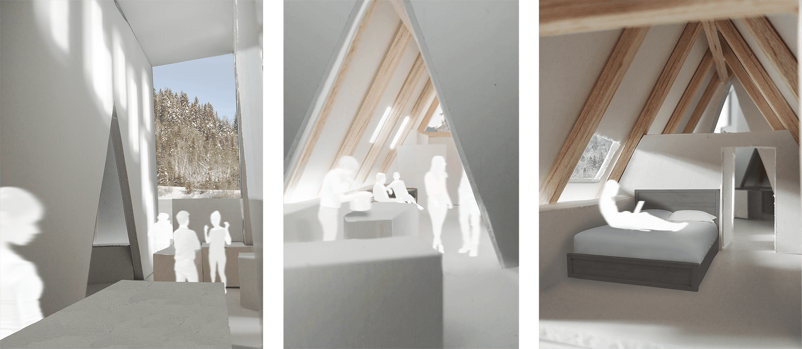

Perspective aérienne

Perspectives d'ambiance
Perspectives d'ambiance

Conception d'un chalet de moins de 100m² sur le site du chalet Grand Kernan, au Parc National de la Jacques-Cartier. Le projet amène une touche contemporaine à la typologie du chalet en A pour créer un espace naturellement éclairé mettant en valeur sa structure en bois.